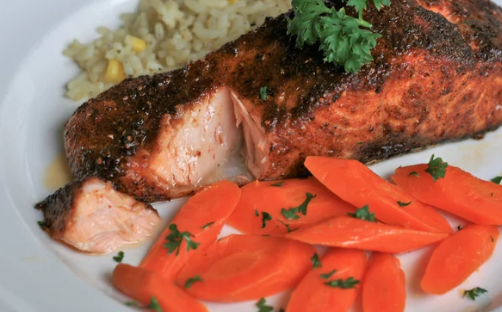

This delicious salmon is ready in 10 minutes!
For the best result, use a fillet that is about an inch thick.
Ingredients
Directions
1. Preheat air fryer to 200C
2. Rinse and dry salmon. Mist with cooking spray. Combine with cajun seasoning and brown sugar in a bowl.
3. Place the salmon in the air fryer with the skin side down. Cook for about 8 minutes.